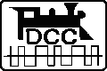

Krümelbahn
KrümelbahnModulbau - Digital
Modulbau unter

 Welche Geräte sind auch für das Roco-System geeignet?
Welche Geräte sind auch für das Roco-System geeignet?
Übersicht der benötigten/verwendeten Komponenten:
-
LocoNET®
Am LocoNET® werden Handregler und Booster angeschlossen. Damit diese einwandfrei funktionieren, ist neben den Datensignalen der Handregler auch das (DCC-)Digitalsignal der Schienen im LocoNET® vorhanden. Das Digitalsignal ist aber so schwach, das daran auf KEINEN Fall das Gleis angeschlossen werden darf.
DCC-Gleissignal und LocoNET® sind somit zwei verschiedenen Leitungen, die auch unbedingt getrennt gehalten werden müssen (siehe auch Skizze oben: DCC=blau, LocoNET®=rot)!
Und: eine Roco-Lokmaus kann und darf auf keinen Fall an das LocoNET® angeschlossen werden!
- Zentrale
Bisher habe ich die Frankenzentrale (Hardwareschnittstelle) mit einem Laptop (bzw. einfachem PC, Vorraussetzung: je eine freie serielle und parallele Schnittstelle) und einem Steuerungsprogramm verwendet.
Dieses "Zentralen-Konzept" scheitert zunehmend an zwei Dingen: - das aktuell verwendete Steuerungsprogramm benötigt zwingend den direkten Zugriff auf eine serielle und eine parallele Schnittstelle, der Einsatz mit einem aktuellen windows-basierten Betriebssystem ist dabei nicht möglich
- es wird zunehmend schwieriger, Laptops mit serieller und paralleler Schnittstelle zu bekommen, hier heißt die Zukunft USB
- volle LocoNET®-Fähigkeit (...ich will nicht auch noch in neue Handregler, Booster usw. investieren...)
- Lesen und Schreiben von Decodern
- Verwaltung der Triebfahrzeuge mit ihren CV-Einstellungen in einer Datenbank
- zukunftsfähig, gerne auch als Open-Source-Komponente
- RocRail als Ersatz für die bisherige Steuerungssoftware
- OpenDCC als Ersatz für die Frankenzentrale, zusammen mit dem
- LocoBuffer von Hans Deloof. Da mein "alter" LocoBuffer nur eine RS232-Schnittstelle hat, kommt noch ein RS232-USB-Wandler dazu.
- Um auch weiterhin die Komponenten auf Ausstellungen verwenden zu können, kommt in die USB-Leitung jeweils ein USB-Isolator.
-
Hierdurch bedingt:
Meine eigenen Erfahrungen und Änderungen beim Aufbau habe ich in einem zusammengefasst, Interessenten sende ich dieses gerne zu. - Booster
Da eine DCC-Zentrale nicht unendlich belastet werden kann, werden in regelmäßigen Abständen Booster (=Verstärker) eingesetzt, um das DCC-Signal auf die Anlage (= Gleis) zu bringen.
Interessante Artikel zum Thema Booster sind auf der Seite der Firma Tams zu finden: Unterlagen für einen redesignten Nachbau gibt es in diesem .
- FRED, FREDI und wiFRED
Zum Steuern meiner Fahrzeuge verwenden ich den
FRED (FRemos Einfacher Drehregler) ...
... bzw. den FREDI (FRemos Einfacher Drehregler Inkremental)
... oder den wiFRED (wiThrottle FRED)
... und eine passende Ablage gibt es hier ...
Versionen: ich verwende zwei FREDI mit Inkrementalgeber und vier FREDI (davon ein SWD-FREDI) mit Potentiometer (jeweils Software-Version 2.3).
Beim SWD-FREDI und durch die Nachrüstung einer zweiten Shift-Taste bei den anderen FREDIs sind jetzt überall die Funktionen F0...F16 möglich.
Die Funktionen F9 und höher wurden in der LocoNET®-Spezifikation durch Digitrax nicht festgelegt.
Drei Hersteller haben jetzt jeweils unterschiedliche Implementierungen realisiert.
Bis F12 verwenden alle FREDIs das Roco-Format, für die Funktionen F13...F16 wird je nach Einstellung im FREDI entweder das Uhlenbrock- oder das Digitrax-Format gesendet.
- Hersteller und ihre Erweiterungen:
- Roco: OPC_LOCO_F912 (A3, nur für die Funktionen F9...F12)
- Uhlenbrock: OPC_UHLI_FUN (D4)
- Digitrax: OPC_IMM_PACKET (ED)
Dazu kommen insgesamt vier wiFREDs, die mit einem wiThrottle-Server an das LocoNET® angebunden werden:
Inzwischen gibt es auch eine kleine , um einen FREDI mit Inkrementalgeber auf ein Potentiometer als Geschwindigkeitsgeber umzubauen.
Und da ein FREDI auch mal defekt sein kann, gibt es für diesen Fall . - DISPA (fka Franz) oder Wie bekomme ich eine Lok auf den FRED?
Fahrzeuge müssen einem FRED zugewiesen werden, damit dieser sie steuern kann. Im Fremo gab es dazu früher FRANZ (FRemos ANehmliche Zuordnungsbox).
Im Fremo wurde lange Zeit die Zuordnung über das FREMO-Telefon gemacht. Eine Telefonanlage ist mir zu aufwändig...
Eine weitere Möglichkeit besteht darin, jeder Lok einen FRED zuzuweisen. Für jedes Fahrzeug ein Fred ist mir zu teuer...
Nach wie vor kann eine Zuordnung selbstverständlich mit der Zenrale getätigt werden, wenn aber die Wege länger werden, weil die Anlage größer ist, bot sich FRANZ an.
Die aktuelle Version des FRANZ heißt jetzt und ist einem Bauvorschlag vom Fremo nachempfunden.
In Abweichnung zum FREMO-Bauvorschlag ist meine Lösung mit einem OLED an die Arduino-Plattform angelehnt, kann auch zur FREDI-Diagnose verwendet werden und unterstützt einen QR-Code-Leser.
So können mit einem entsprechenden QR-Code die darin enthaltenen Fahrzeuginformationen direkt an einen FREDI übertragen werden: die Zuweisung als Bedienhandlung am FREDI ist dann nicht mehr erforderlich.
- LocoIO von Hans Deloof
Zur Ansteuerung von Signalen, Servos, Leuchten usw. auf meinen Modulen verwende ich LocoIO-Platinen. Hierdurch ist es möglich Stellvorgänge ohne weitläufige Kabelverbindungen auszuführen.
Meine Erfahrungen zur Inbetriebnahme und zum Betrieb habe ich in einer kleinen beschrieben.
Da die LocoIO keine Verbindung zur Zentrale benötigen und somit ein eigenes kleines LocoNET® bilden können, liefert ein LocoNET®-Hub die Grundversorgung hierfür. Meine des Gerätes sende ich Interessenten gerne zu.
Durch diese Vorgehensweise gibt es auf meinen Modulen eine klare Trennung zwischen "Fahren" und "Steuern". - weiteres Zubehör
Zum Testen und zur Inbetriebnahme der Gleisanlagen hat sich bestens bewährt:- Polungsprüfer und ein
- DCC-Voltmeter
- LocoNET®-Kabeltester
- LocoNET®-Pegeltester.
Hiervon habe ich eine für mich praktikable Variante gebaut: - LocoNET®-Spannungs- und Strommessgerät. Hiervon habe ich eine für mich praktikable Variante gebaut, eine meines Gerätes sende ich Interessenten gerne zu.
- den LocoBuffer von Hans Deloof
zusammen mit der Software LocoNET® over TCP
bzw. mit dem LocoNET®-Monitor in DecoderPro® von JMRI
-
:
Sie dient der Verbesserung der LocoNET®-Signale und wird nur bei sehr großen Arrangements verwendet. -
:
an (m)eine Zentrale können nicht beliebig viele FRED's und Booster angeschlossen werden. Um allen angeschlossenen Geräten genügend 'Saft' zur Verfügung stellen zu können, wird bei größeren Arrangements ein Verstärker (RSCLD) zwischen geschaltet.
- Modellbahnzeit
Wenn ich nach Fahrplan fahre, benötige ich eine Uhr. Da diese aber für die Modellbahn zu langsam geht, wird eine schnellere Uhr benötigt.
Vergangenheit (uralt):
Für die oftmals verwendeten analogen Nebenuhren ist ein Taktgeber erforderlich. Nach Umstellung auf DCC werden auch die Nebenuhren über das LocoNET® von der Zentrale angesteuert (LocoNET®-Uhr).
Bei der Ansteuerung über die Frankenzentrale kam ein spezieller Uhrendecoder zum Einsatz.
Vergangenheit (alt):
Meine neue Zentrale (siehe oben) unterstützt FastClock, und so kann die Nebenuhr jetzt auch über einen kleinen FastClock-Decoder angesteuert werden.
Der FastClock-Decoder mit der verwendeten Hardware wird nicht weiterentwickelt, dessen Aufgaben wird jetzt von der (universellen)
Aktuell:
mit digitaler Anzeige übernommen.
Dazu auch verfügbar:
Als Ersatz für die Frankenzentrale und die speziellen Uhrendecoder wurde eine neue selbständig arbeitende entwickelt. An diese einfach zu bedienende Kompakteinheit können die Nebenuhren direkt angeschlossen werden, Frankenzentrale und Uhrendecoder werden überflüssig. Nebenbei: Fahrpläne werden (aktuell) mit dem Programm FPLEdit von Manuel Huber erstellt.
Für das Fahren nach Fahrplan wird neben dem eigentlichen Fahrplan an jedem Bahnhof auch eine Bahnhofsfahrordnung benötigt.
Mein Programm ist in der Lage, eine Fahrplandatei im FPL-Format in eine Bahnhofsfahrordung zu konvertieren, diese dann zu bearbeiten und letztlich auch zu drucken.
- Bremsgenerator/Pendelautomatik für DCC
Die Problemstellung ist eigentlich ganz einfach: Ein Signal zeigt Hp0 und der anrollende Zug soll anhalten. Zugegeben: das Problem ist für FREMO uninteressant, weil hier jeder Zugführer für das Beachten der Signale selbst zuständig ist. Anlagenbetreiber, die jedoch nicht ständig nach den FREMO-Regeln fahren, interessiert das Thema schon.
Vor einem Hp0 zeigenden Signal kann nicht, wie das unter analoger Steuerung möglich ist, einfach der Fahrstrom mittels Kontakt abgeschaltet werden - dann bleibt der Zug abrupt stehen, Beleuchtung usw. wird abgeschaltet.
Für Digitalsysteme gibt es hierfür spezielle Bremsgeneratoren. Das Prinzip ist simpel: vor einem Hp0 zeigenden Signal wird anstelle des normalen DCC-Signales ein modifiziertes DCC-Signal eingespeist, welches den Zug zum Halten bringt. Da aber in der Regel unbekannt ist, welches Triebfahrzeug auf das Signal zufährt, wird anstelle der bekannten Lokadresse die Adresse Null verwendet (Broadcast-Meldung für alle DCC-Decoder in diesem Abschnitt). Da sich normalerweise nur ein Fahrzeug in diesem Abschnitt befindet, reagiert auch nur dieses eine Fahrzeug.
Der Signalabschnitt ist so festzulegen, dass der längste Zug inklusive Bremsweg hinein passt; der Bremsweg für das sich im Signalabschnitt befindliche Fahrzeug richtet sich einzig und allein nach der Einstellung im CV#4 des Fahrzeuges.
Da mir kommerzielle Lösungen zu teuer sind, wurde ein solcher Bremsgenerator selbst entwickelt.
Einen Artikel zum Thema "Blocksteuerung für den Digitalbetrieb" - hier wird auch der Einsatz eines Bremsgenerators beschrieben - erschien im Eisenbahn-Magazin 1/10, S.67..69.
Auf der Hardwarebasis des Bremsgenerators wurde auch eine Pendelautomatik entwickelt.
Wer ein Gerät nachbauen möchte, kann gerne die zugehörigen Unterlagen bei mir anfordern - eMail mit Angabe des gewünschten Gerätes genügt.

Welche Geräte sind auch für das Roco-System geeignet?
In der nachfolgenden Tabelle sind die Geräte aufgeführt, die auch bereits in einem Roco-System ihre Bewährungsprobe bestanden haben. Dies sind zumeist die Geräte, die direkt mit dem DCC-Signal arbeiten.Zur Erinnerung: Die Lokmaus von Roco arbeitet mit XPressNet-Protokoll und -spezifikation. Dies ist nicht mit dem LocoNET® identisch, auch wenn die Steckverbinder (RJ12, 6polig) identisch sind.
| Reichelt | ersetzt: | |
|---|---|---|
| Anschlußkabel | WSK 6-6 3m WK 6-6 ..m |
Roco 10754 Roco 10756 |
| Bremsgenerator | Roco 10779 | |
| Kehrschleifenmodul | Roco 10769 (Lenz LK100) |
|
| Spaxbooster | Roco 10762 | |
| Verteilerboxen | WB 3x6-6 | Roco 10758 |
Informationen zur Roco-Lokmaus2 und dem Fehler E7 gibt es in hier:
DE:
EN:
Wer ein Gerät nachbauen möchte, kann gerne die zugehörigen Unterlagen bei mir anfordern:
mit Angabe des gewünschten Gerätes genügt.

DE:
EN:
Wer ein Gerät nachbauen möchte, kann gerne die zugehörigen Unterlagen bei mir anfordern:
mit Angabe des gewünschten Gerätes genügt.